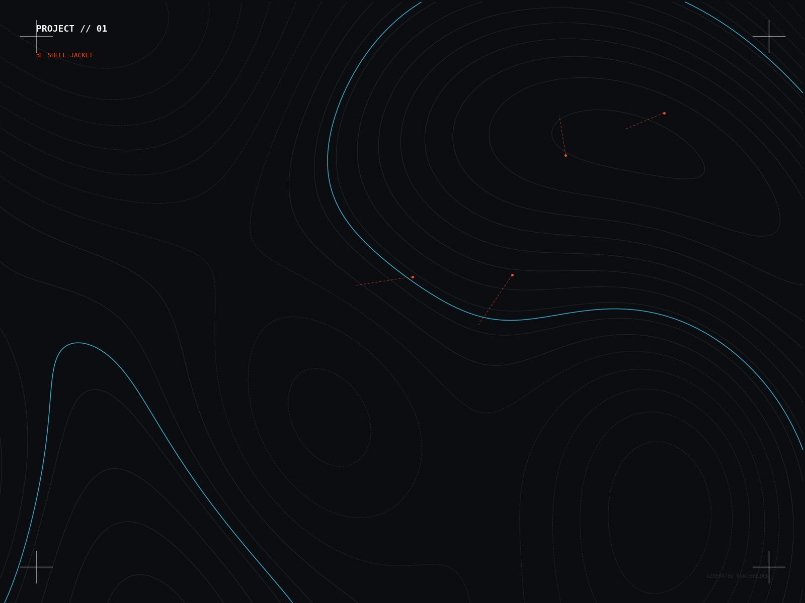
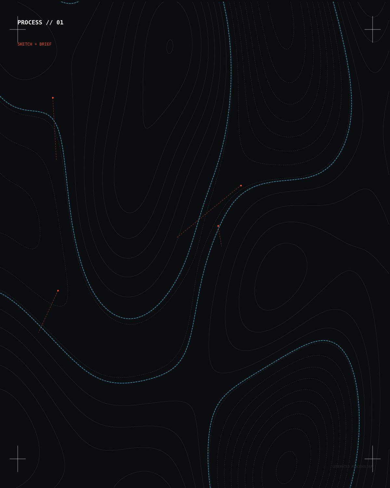
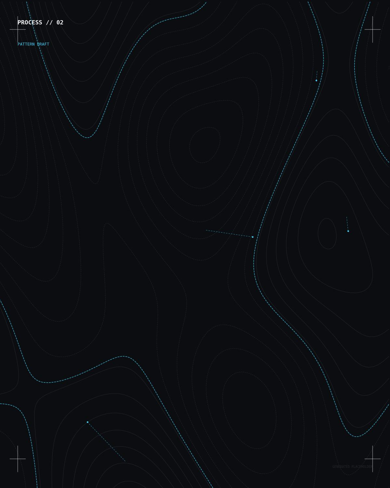
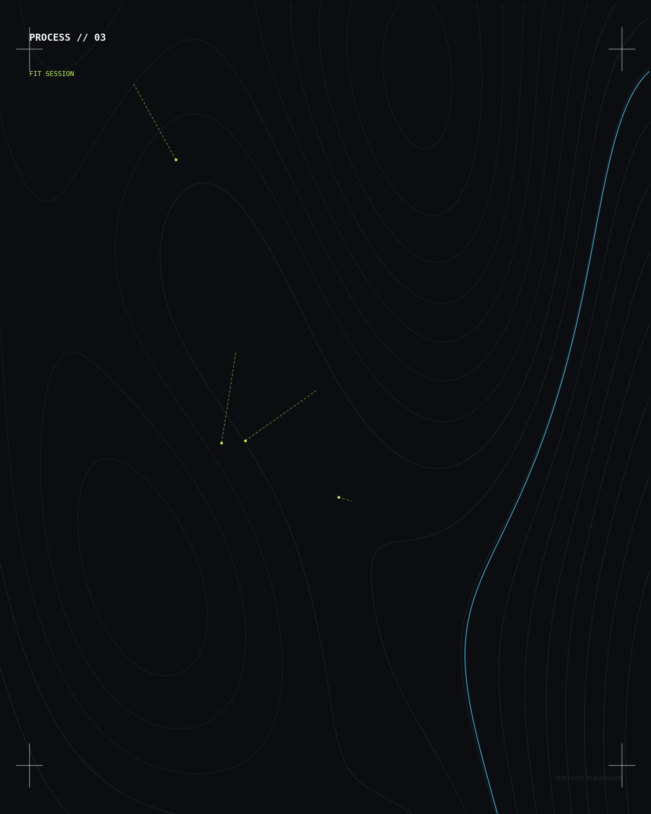
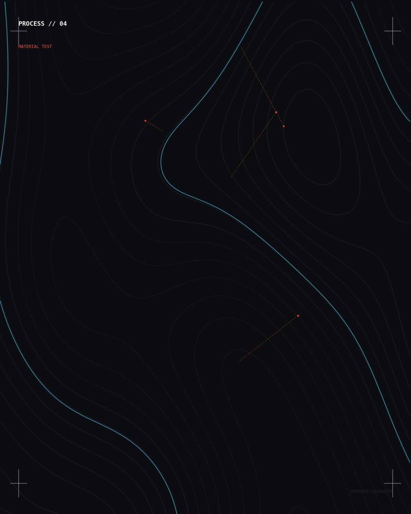
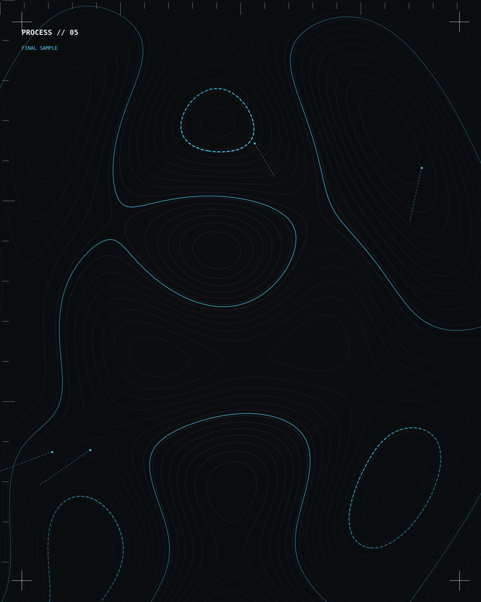
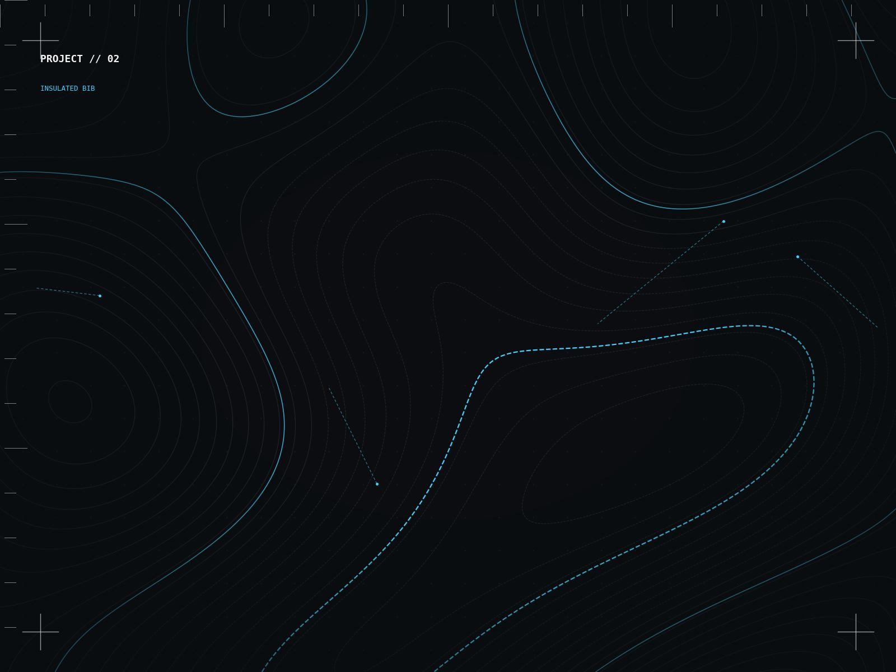
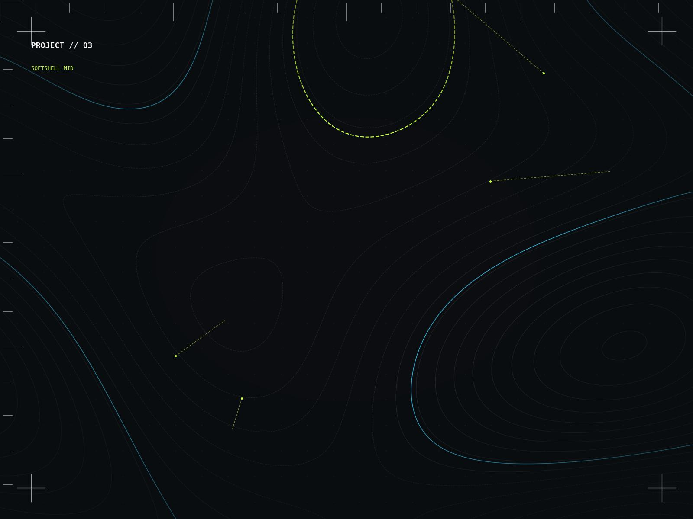

01
Alpine Shell System
Lead Designer · FW24 · O'Neill Europe
A modular 3-layer shell platform built around a single fit block, engineered for backcountry ventilation without sacrificing storm protection.
Senior Performance Designer — Menswear / Snow
Designing technical outerwear for O'Neill Europe. 12+ years turning fabric, fit and function into product men trust above the treeline.
01 · Approach
"Performance apparel is a promise. Every seam, every membrane, every stitch angle is a decision the rider is trusting with their skin — I design like the mountain is grading my work, because it is."
I lead the menswear performance design process for O'Neill Europe's snow category, from initial concept sketch through fabric sourcing, fit sessions and factory handoff. My focus sits at the intersection of athlete-tested function and product men actually want to wear off the hill.
Before O'Neill I worked across outerwear and technical sportswear, which is where I picked up the instinct for building product that survives real conditions, not just a look book.
02 · My Process

Ideation

Technical development

Sourcing

Wear testing

Production
03 · Selected Work

Lead Designer · FW24 · O'Neill Europe
A modular 3-layer shell platform built around a single fit block, engineered for backcountry ventilation without sacrificing storm protection.

Lead Designer · FW23 · O'Neill Europe
Zone-mapped insulation that puts warmth exactly where riders lose heat fastest, and cuts it everywhere they don't.

Design Lead · Cross-functional · O'Neill Europe
Led a small design + development pod to bring a lower-impact capsule from concept to sell-in in one season, coordinating design, sourcing and marketing.
04 · Spec Sheet
05 · What's Next
“I've spent this stage of my career learning what makes great product. The next stage is building the team, process and standard that makes great product repeatable.”
Mentored 3 junior designers through their first full seasonal launch.
Ran design critique across the menswear snow team every sprint.
Owned supplier relationships end-to-end for two core fabric partners.
06 · Experience
O'Neill Europe
PREVIOUS COMPANY
PREVIOUS COMPANY
YOUR SCHOOL